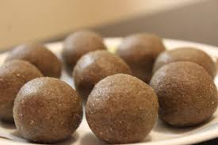
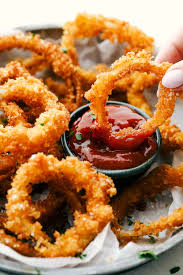
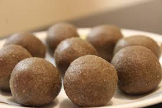
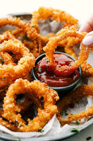

Aloo tikki

Aloo tikki recipe
Ingredients
- Potato
- Peas
- Corriander leaves
- Rice flour
- Green chillies
- Chilli powder
- Garam masala
- Salt
Method to cook
- Take a pressure pan, pour water and boil the potatoes.
- Let the potatoes cool down.Then mash the potatoes well.
- Add salt, chilli powder,garam masala,rice flour,peas,corriander leaf and green chillies.
- Mix all ingredients together.
- Make small size patties.
- Take a fry pan, pour some oil and heat it.
- Fry the patties.
- Aloo tikki is ready!
Back to Home
other recipes

 


